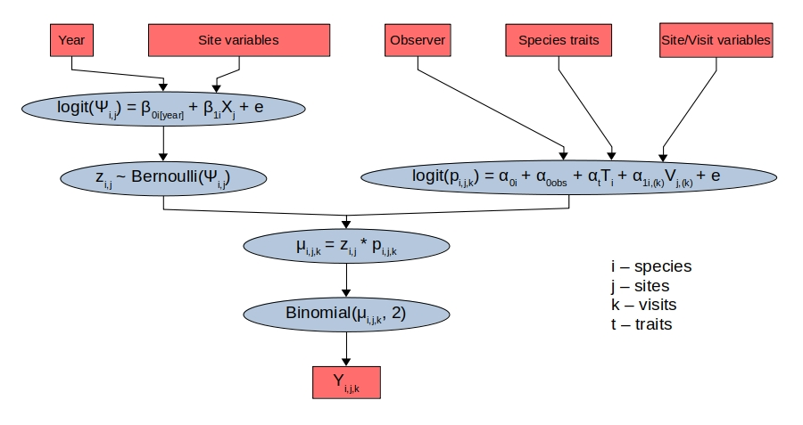

Bayesian Hierarchical Models
Bayes' theorem provides a powerful way to incorporate uncertainty into statistical modeling. Two key differences set the Bayesian approach apart from classical frequentist statistics. First, the parameters of a model are treated as random instead of fixed variables, i.e. they are drawn from a probability distribution. This has substantial advantages when estimating complex models because the uncertainty surrounding model parameters can be propagated throughout the model. Second, Bayesian approaches take into account prior information about the distribution of a parameter. Thus, Bayesian inference is an elegant and mathematically rigorous way to update existing beliefs in the light of new data.
I used Bayesian hierarchical models in two recent projects. In the first project, I asked whether interactions among bird species such as competition or predation leave an imprint in their spatial distribution. I applied so-called joint species distribution models to address this question. These models look for patterns in the co-distribution of species after accounting for their individual environmental requirements. If two species co-occur more or less often than expected by their environmental preferences, that might indicate positive or negative interactions among those species. The results showed: you can’t reliably detect species interactions in typical survey data, but you might very well in the future with improved data collection and modeling techniques.
In the second project, I tested competing hypotheses regarding the effects of visual and behavioral features of butterflies on their detectability in the field. To have full control about the model specification, I used the probabilistic programming language JAGS to implement the models and sample the posterior distribution using MCMC. The results indicated strong effects in the hypothesized direction, namely, put simply, that big colorful butterflies are detected much more reliably than small dull ones.
Further resources
-
Research article and a “behind the scenes” blog post on the bird study. All codes are available on my GitHub .
-
A brief summary of the butterfly study and accompanying R and JAGS code are available on my GitHub .